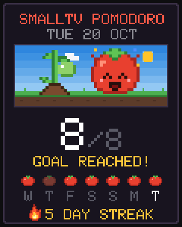

Your focus becomes a game.
Reach your daily focus goal and your streak goes up. Next to the tomato, a plant grows with every day in a row until it becomes the golden tomato. The panel has a yearly garden, 10 achievements and a day card to show your friends.

How it works
 Reach the goal
Reach the goal
Set your daily focus goal in the panel (8, for example). Every finished Pomodoro counts as one tomato.
 Keep the streak
Keep the streak
Every day in a row with the goal reached adds 1 to your streak. The screen shows a flame with the number of days. Skip a day and the streak and the plant start over.
 Grow the plant
Grow the plant
The plant follows your streak: from seed to golden tomato in 7 days. The clock keeps a year of history, even through power-offs.
The streak plant
It shows up on the Tomato face, next to the mascot. Screens rendered by the project's simulator.

 Seed0 days
Seed0 days
 Sprout1 day
Sprout1 day
 Flower2–3 days
Flower2–3 days
 Green tomato4–5 days
Green tomato4–5 days
 Ripe6 days
Ripe6 days Golden7+ days
Golden7+ daysYearly garden
In the panel's Foco (Focus) tab, each little square is a day of the past year; red means the goal was reached. Below it you see total tomatoes, days with focus and your best streak.
Sample · 412 tomatoes in 96 days · best streak 12 days
Achievements
Ten pixel art achievements. The ones you don't have yet are greyed out, and each new one pops up in the panel.
 First tomatoFinish a focus sessionGoal reachedReach the daily goal onceOn fire3 days in a row on goal
First tomatoFinish a focus sessionGoal reachedReach the daily goal onceOn fire3 days in a row on goal Golden tomato7 days in a row on goal
Golden tomato7 days in a row on goal Golden month30 days in a row on goal
Golden month30 days in a row on goal Growing garden10 tomatoes in total
Growing garden10 tomatoes in total Full basket100 tomatoes in total
Full basket100 tomatoes in total Farm500 tomatoes in total
Farm500 tomatoes in total Marathon12 sessions in one day
Marathon12 sessions in one day Focused weekendGoal on Saturday and Sunday
Focused weekendGoal on Saturday and SundayDay card
Tap Share my day in the Focus tab. The panel draws a pixel art card with the Tomato scene, your streak plant, today's sessions, the last 7 days as little tomatoes and the flame.
- On a phone: opens the phone's share menu, so you can send the image anywhere.
- On a computer: downloads a 1080×1350 PNG (portrait, 4:5).
- When the daily goal is reached, the panel shows a shortcut to share.
 For face creators
For face creators
JSON packs can show the streak with {STREAK} and the best streak with {BEST}, draw the plant with the plant layer and show or hide layers with the streak condition. Format in docs/PACOTES.md (in Portuguese).